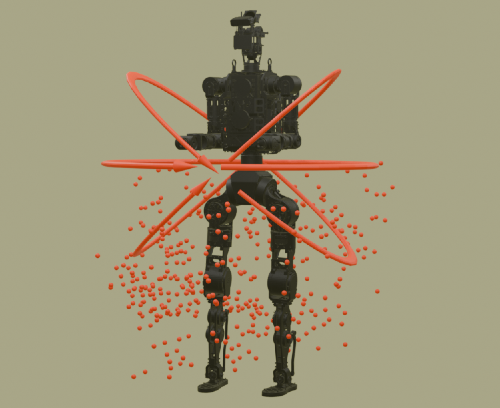

Figure 1. A service humanoid traversing structured non-flat terrain while carrying a payload.
Three ideas trained in one standard PPO run — no distillation, no force sensors, no teacher-student staging.
21-slide video presentation — arrow keys or click to navigate · Open full page →
Foothold selection on structured terrain requires explicit reasoning about contact planarity, surface steepness, and kinematic reachability, properties not captured by a single height-based terrain signal. We propose a multi-channel terrain cost combining flatness, steepness, and velocity-aware height feasibility, plus a forward climb reward, that simultaneously drives a GPU-parallel divergent component of motion (DCM) foothold planner and shapes a dense per-step affordance reward for an asymmetric actor-critic policy trained with proximal policy optimization (PPO) from depth images. A Bézier swing trajectory with adaptive apex bias extends foothold tracking to joint position-and-orientation, using the arc tangent to guide sole orientation through riser crossings and tread landings. To support payload tasks, we introduce a lower-body compliance training procedure in which a virtual wrench is injected at a sampled load attachment point, generating physically consistent force and moment; wrench-aware compliance targets replace rigid pose penalties, and the policy learns to yield to load-induced perturbations without force sensing. The full system trains end-to-end with standard PPO, no distillation, and no teacher-student staging, and is deployed on a humanoid directly from simulation with configuration changes only. In simulation, the policy reaches $1.0~\mathrm{m/s}$ on stairs with risers up to $0.20~\mathrm{m}$ and improves payload robustness up to ${\sim}15~\mathrm{kg}$ centered load and for moment-dominated wrist loads without fine-tuning. We also provide a qualitative hardware demonstration on structured terrain.

Figure 2. Overview of the proposed framework.
Flatness ($Q$), steepness ($E$), velocity-aware height feasibility ($M$), and a climb bonus jointly drive a GPU-parallel DCM foothold planner and serve as a dense terrain-affordance learning signal for the RL policy. A Bézier swing trajectory with adaptive apex bias and clearance extends foothold tracking to joint position-and-orientation references, using the arc tangent to guide sole orientation through riser crossings and tread landings.
A virtual wrench injected at a sampled load attachment point generates physically consistent force and moment; together with wrench-aware compliance targets for pelvis height and trunk orientation, it teaches the policy to yield to payload-induced perturbations without force sensing, improving robustness up to ${\sim}15\,\text{kg}$ centered load and for moment-dominated wrist loads without payload-specific fine-tuning.
The system trains with standard PPO in a single run (no distillation, no teacher-student staging) and combines terrain-aware foothold selection with payload compliance, deployed zero-shot from simulation on a service humanoid traversing structured terrain while carrying payload.
The planner selects the candidate foothold cell $i$ that minimises a total cost $$\mathcal{J}_i = \alpha_{\text{pos}}\,d_{\text{pos},i} + \alpha_{\text{dcm}}\,d_{\text{dcm},i} + \alpha_E E_i + \alpha_Q Q_i + \alpha_M M_i - \alpha_{\text{climb}}\,b_i,$$ where the three terrain channels are:
After selecting per-foot landing target $\mathbf{p}^*_f$, the swing foot tracks a quadratic Bézier arc whose tangent simultaneously determines foot orientation: $$\left\{\begin{aligned} \mathbf{p}(u) &= {(1-u)}^2\,\mathbf{p}_\ell + 2(1-u)u\,\mathbf{p}_{\mathrm{apex}} + u^2\,\mathbf{p}^*_f,\\ \dot{\mathbf{p}}(u) &= 2(1-u)(\mathbf{p}_{\mathrm{apex}}-\mathbf{p}_\ell) + 2u(\mathbf{p}^*_f-\mathbf{p}_{\mathrm{apex}}), \end{aligned}\right.\quad u\in[0,1]$$ where $\mathbf{p}_\ell$ is the lift-off position and $\dot{\mathbf{p}}(u)$ points in the direction of instantaneous foot travel. The apex $xy$ is biased toward whichever endpoint is higher: $$\mathrm{bias} = \mathrm{clip}\!\left(0.5 + \kappa\,\frac{\Delta z}{h^*_{\max}},\;b_{\min},\;b_{\max}\right), \qquad \mathbf{p}_{\mathrm{apex},xy} = (1-\mathrm{bias})\,\mathbf{p}_{\ell,xy} + \mathrm{bias}\,\mathbf{p}^*_{f,xy}.$$ For step-up ($\Delta z > 0$), bias $> 0.5$ places the trajectory peak over the riser face, preventing premature descent onto the vertical surface; for step-down ($\Delta z < 0$), bias $< 0.5$ extends horizontal travel before descent, reducing the landing impact angle. The apex height adapts to terrain relief: $$c = \min\!\bigl(c_{\min} + s\,|\Delta z|,\;c_{\max}\bigr), \qquad z_{\mathrm{apex}} = 2\bigl(\max(z_\ell,\,z^*_f) + c\bigr) - \tfrac{1}{2}(z_\ell + z^*_f).$$ The tangent is vertical at $$u_{\mathrm{peak}} = \frac{z_\ell - z_{\mathrm{apex}}}{z_\ell - 2z_{\mathrm{apex}} + z^*_f},$$ equal to $0.5$ for level steps and shifting toward the higher endpoint on transitions. A phase-conditional schedule derived from $\dot{\mathbf{p}}(u)$ guides sole orientation through two windows around $u_{\mathrm{peak}}$: in the pre-apex window, $\dot{\mathbf{p}}$ is rotated $90°$ in the sagittal plane ($(t_x,t_y,t_z)\!\mapsto\!(t_z,t_y,{-}t_x)$) and normalized, yielding a forward-downward direction that guides the sole through the riser and reduces toe-strike risk; in the post-apex window, $\hat{\mathbf{t}}_f = \dot{\mathbf{p}}/\|\dot{\mathbf{p}}\|$ aligns the foot with the forward travel direction for tread landing; elsewhere no orientation constraint is applied. Both position proximity and foot heading are jointly optimized during swing via an exponential proximity kernel $$r_{\mathrm{foothold}} = \sum_f I_{\mathrm{swing},f} \exp\!\bigl(-\sigma_p\,\|\mathbf{p}_f - \mathbf{p}_{\mathrm{B\acute{e}z}}(t)\|^2 -\sigma_d\,\|\hat{\mathbf{d}}_f - \hat{\mathbf{t}}_f(u)\|^2\bigr),$$ where $\hat{\mathbf{d}}_f = R_f\hat{\mathbf{e}}_x$ is the foot forward axis and $\sigma_d = 0$ recovers the position-only form when orientation is not used.


Figure 3. Adaptive Bézier apex bias for four terrain transitions.

Figure 4. Candidate load attachment points $\mathbf{p}_\text{load}$ sampled uniformly from the robot body surface. Body-attached samples cover centred loads; arm-extended samples cover large moment arms. These positions define the virtual spring-damper anchor during compliance training.
A payload exerts a wrench $\mathbf{W}=(\mathbf{F},\boldsymbol{\tau})$ on the robot, where the moment $\boldsymbol{\tau}=\mathbf{r}_\mathrm{load}\times\mathbf{F}$ scales with the CoM-to-load arm $\mathbf{r}_\mathrm{load}$ independently of mass. $\boldsymbol{\tau}_\mathrm{ext}$ tilts the trunk by $\varphi$, displacing the CoM by $\Delta x_\mathrm{CoM}\approx d_\mathrm{CoM}\varphi$; under LIPM this offset grows by $e^{\omega_0 T_\mathrm{step}}>2$ over a typical step, so moment-induced tilt perturbs the capture point more than an equivalent translational offset, and both components of $\mathbf{W}$ require explicit coverage in the disturbance distribution. We emulate the wrench by applying a spring-damper at the virtual load attachment point $\mathbf{p}_\mathrm{load} = \mathbf{p}_\mathrm{CoM} + \mathbf{r}_\mathrm{load}$: $$\mathbf{F}_\mathrm{ext}(t) = k\bigl(\mathbf{p}_a - \mathbf{p}_\mathrm{load}(t)\bigr) - c\,\dot{\mathbf{p}}_\mathrm{load}(t),$$ where $\mathbf{p}_a$ is a fixed world-frame anchor drawn once per episode, with stiffness $k$ and damping $c$ set so the spring force at maximum displacement $R_a$ reaches a fixed fraction of nominal weight. Applying the force at $\mathbf{p}_\mathrm{load}$ rather than the CoM generates $\boldsymbol{\tau}_\mathrm{ext} = \mathbf{r}_\mathrm{load}\times\mathbf{F}_\mathrm{ext}$ automatically. At each reset, $\mathbf{r}_\mathrm{load}$ is drawn from a two-component mixture that jointly covers both carry scenarios: body-attached with $\mathbf{r}_\mathrm{body}\sim\mathrm{Ball}(R_\mathrm{close})$, direction biased toward $-\hat{\mathbf{z}}$; and arm-extended with $\mathbf{r}_\mathrm{arm}$ from a shoulder-frame half-ellipsoid, biased forward. Both components use cosine-power lobes to concentrate sampling: $$\left\{\begin{aligned} p(\hat{\mathbf{d}}) &\propto \cos^{n}\theta,\quad \theta\in[0,\pi/2] &&\text{(body-attached direction)},\\ p(\mathbf{r}_\mathrm{arm}) &\propto \cos^{n_r}\!\bigl(\angle(\mathbf{r}_\mathrm{arm},\hat{\mathbf{x}}_\mathrm{shoulder})\bigr) &&\text{(arm-extended bias)}, \end{aligned}\right.$$ where $\hat{\mathbf{d}}$ is the unit direction of $\mathbf{r}_\mathrm{body}$ and $\theta$ its polar angle from $-\hat{\mathbf{z}}$. A weight-$\epsilon$ isotropic component blends in lateral and overhead samples. Rigid height and orientation penalties are replaced with wrench-aware compliance targets: $$z^*_\mathrm{virt} = h^\mathrm{terrain}_\mathrm{pelvis} + h^* + \alpha_z\!\left(z_a - h^\mathrm{terrain}_\mathrm{pelvis} - h^*\right), \qquad \varphi^*_\mathrm{virt} = \alpha_\varphi\,\frac{\tau_y}{k_\mathrm{rot}},\quad \psi^*_\mathrm{virt} = \alpha_\psi\,\frac{\tau_x}{k_\mathrm{rot}}.$$ The combined compliance reward $$r_\mathrm{comply} = -(z_\mathrm{pelvis}-z^*_\mathrm{virt})^2 - (\varphi_B-\varphi^*_\mathrm{virt})^2 - (\psi_B-\psi^*_\mathrm{virt})^2,$$ where $\varphi_B,\psi_B$ are pelvis pitch and roll from the projected gravity vector. When $\alpha_z = \alpha_\varphi = \alpha_\psi = 0$ the reward collapses to the original rigid height and orientation penalties; at nonzero gains the policy learns to yield to the full wrench, acquiring wrench-aware compliance in both translation and rotation as a learned behavior without explicit force or torque sensing.
Four variants are compared: TACT + Adaptive Gait (Ours), TACT-only, Adaptive Gait only, and Baseline (standard depth-map policy, no terrain-cost channels). Each is evaluated at 20 k iterations across 4096 MuJoCo environments on stairs, slopes, and rough terrain; a held-out hard-terrain sweep (risers 0.20-0.30 m) reports SRhard on the strict interior [0.22, 0.28] m. Ours leads on both regimes (70% standard SR, 30% SRhard), outperforming TACT-only by 13 and 9 pp and Adaptive Gait only by 17 and 12 pp. Adaptive Gait only falls below the Baseline on hard terrain (18% vs. 19%), confirming that frequency re-timing without terrain-quality guidance is actively harmful when risers approach kinematic limits. The Baseline's 52% and 19% SR coincide with the highest 95th-percentile GRF (${\approx}6.7\times$ and $8.0\times\,mg/2$), consistent with edge-biased contacts. Removing all TACT channel weights raises foot-target distance $2.8\times$ (0.088 → 0.251 m), and the SR gap relative to the Baseline is speed-invariant (71 / 68 / 69% at 0.3 / 0.6 / 1.0 m/s), confirming foothold quality, not speed, drives the difference.


Figure 5. Terrain traversal ablation on standard terrain (top) and hard terrain - out-of-distribution risers 0.20-0.30 m (bottom).
Three attachment conditions are tested at deployment time (no policy change): pelvis-mounted +15 kg and +20 kg (centered CoM offset) and wrist-mounted +10 kg (large moment arm). At moderate centered load (+15 kg), Ours achieves 50% SR vs. 38% at lower power (247 W vs. 277 W), consistent with compliance training absorbing the downward wrench. At high centered load (+20 kg) both policies degrade to ${\approx}37\%$ and ${\approx}35\%$ SR, the load approaches the boundary of the training distribution, yet Ours remains 27 W below the Baseline (293 vs. 320 W), confirming partial compliance is retained. The wrist-mounted condition yields the largest margin: 65% SR vs. 50% at 223 W vs. 259 W, consistent with the arm-extended wrench samples explicitly targeting moment-dominated loads.


Figure 6. (a) Speed-conditioned SR; (b) foot-target distance across ablation variants; (c) SR (%) and mean power (W) under payload. (d-f) Qualitative hardware payload demonstrations: 20 kg backpack descending (d) and ascending (e) stairs; 7 kg tray carried at arm's length (f).
Simulation (top) and real robot (bottom) demonstrations, zero-shot from simulation.
Baseline · no payload
Front-mounted backpack · 5 kg
Rear-mounted backpack · 5 kg
Front + rear backpacks · 10 kg
Basket · 5 × 1 kg blocks
Car door · ~5 kg · largest moment arm
Stair traversal · risers up to 0.20 m · 1.0 m/s
Stair ascent · wrist-mounted payload · 7 kg
Stair descent · rear-mounted backpack · 20 kg
Stair ascent · rear-mounted backpack · 20 kg
@inproceedings{anonymous2026tactful,
title = {TACT-ful: Multi-Channel Terrain Affordance and Compliance
Training for Payload-Robust Perceptive Humanoid Locomotion},
author = {Anonymous Authors},
year = {2026},
note = {Under Review},
}